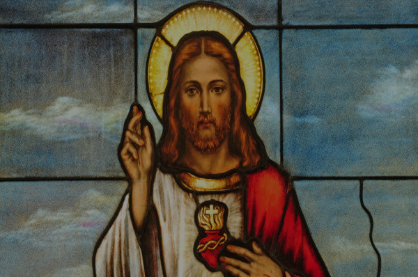

Welcome to the Apostles of Mary parish commmunity web page! We are happy that you found us. We are a small group of Catholics who meet once a month to pray, learn, and experience God's peace, truth, and love. This parish community is a ministry of Saint Adelaide's Catholic Parish in West Peabody, Massachusetts.
Our mission is to live our Catholic faith in the Marist tradition, which quite simply is to live our life in imitation of the Blessed Mother in her love for her Divine Son, Jesus and in her love for her children; our brothers and sisters.
Do you seek peace?
We strive to be at peace in a world of discord through prayer and meditation seeking Jesus, the Prince of Peace.
Do you seek the truth?
We seek the truth in a world that says there is no truth by seeking to know and experience Jesus Who says he is the way, the truth, and the life.

Do you seek love?
We strive to love with a self-giving love instead of love that is only based on feeling by taking up our crosses and helping others carry theirs.
If you are interested in learning more about us, come and see!